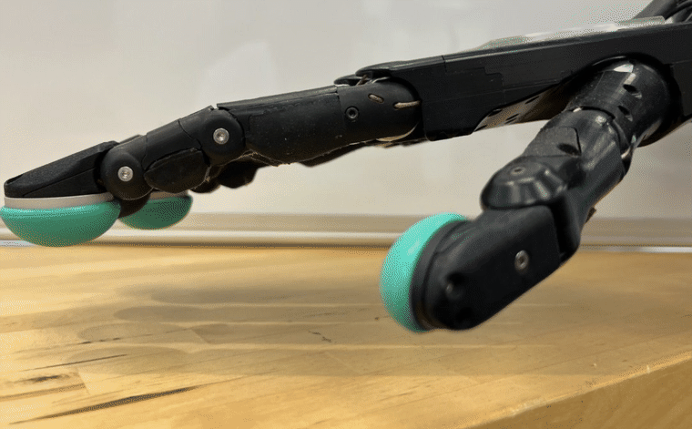

Closed-Loop Tactile Stimulation
A robotic finger taps a surface, and its touch signal drives stimulation of living neural cultures.
Connecting a robotic hand to living neural networks, so that touch drives stimulation and the network’s own activity can close the loop.
- Robotic hand control and tactile force sensing (Shadow Hand, ROS)
- Sensory encoding: converting force signals into stimulation patterns with a biomimetic mechanoreceptor model
- Closed-loop experiment design, with stimulation triggered by the culture’s own spiking
- Synchronizing robot, stimulation and neural recording timelines
- Reinforcement learning agents (Q-learning)